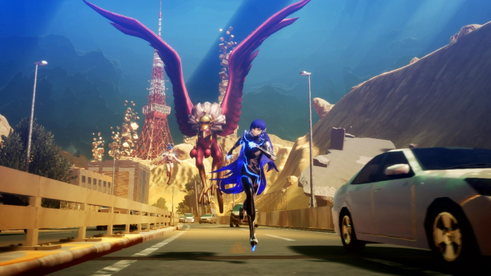
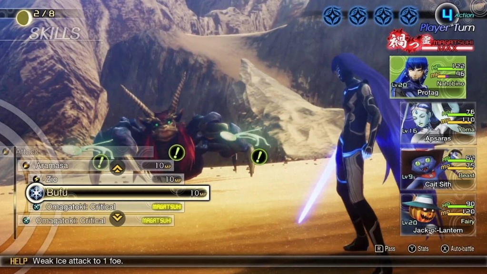

Shin Megami Tensei V
Shin Megami Tensei V (as in the roman numeral "5") is of the mainline series of Megami Tensei, released on November 11, 2021 for the Nintendo Switch. You play as a schoolboy of modern day Tokyo who finds an entrance to post-apocalyptic Tokyo, which has been overrun by demons. You fuse with a demon to become a Nahobino, which is a being with the potential to rival a god. You learn how to fight and befriend and summon demons to help you survive against hostile demons, and you and your schoolmates find yourselves in the crosshairs of angels and demons in a war to claim God's throne.
What Is Good
A number of fans have critical and negative views of this game, and some of these fans are reasonable, while certain fans hate the game because they only like the older games and hate anything that's new. (What else is new?) I will discuss what I believe the game did well and... not well. Let's start with the good.
The graphics are outstanding. People tend to make fun of the Nintendo Switch's graphics and ability to run games, but this game looks great, both in battle and outside. Outside of battle, the game is semi-open world. The Pokémon Sword and Shield DLC areas are a fair comparison in terms of how gameplay outside of battle works. It's no Fallout game or Zelda: Breath of the Wild, but you have a lot to explore in post-apocalyptic Tokyo, and for a destroyed, former shell of Tokyo, the overworld looks beautiful in my opinion.
In combat, not only does the game look good, but the combat is fun. In the Shin Megami Tensei games, there is something called the "Press Turn" system. Basically, you have 1 action for each party member you have (your party consists of you and up to 3 demons), and a side takes actions until they run out of actions, then it becomes the opponent's turn. However, you gain an action if you strike an enemy's weakness using an attack (like in Pokémon- demons can be weak to fire and such), and you lose an action if an attack misses or the enemy nullifies the attack somehow ON TOP OF the action you just technically lost. SMT V keeps this system, which is a challenging combat mechanic, especially for new players, but this is fine since you can change the difficulty at any time (outside of battle, of course). This specific game also adds a mechanic called Magatsuhi Skills. Magatsuhi is a type of demonic energy, and as you charge your Magatsuhi gauge through battle and exploration, you and your demons gain access to a special attack that doesn't consume an action. Overall, the combat feels balanced, especially with changeable difficulty.
Another well done aspect is the demons. Demons are seen roaming the lands, and you enter battle by colliding with one. This is a step up from past games, in which battles start randomly just from running around, or the demons roaming the lands all looked like a generic shadowy or digital creature. You actually see the specific demons in this game. You are able to carry around many demons at once, and similarly to how one can get attached to their Pokémon, you can get attached to your demons, in which traditionally is advised against if your demons aren't endgame, high level demons since the main way to get better demons is fusing your demons together to make a brand new mythological creature. Plus, demons usually stop leveling up efficiently after a certain predetermined level. However, in this game there are items that permit you to level up your demons easier, so if you have a demon you don't want to get rid of, you can continually strengthen it and keep it alongside you. Some demons are non-hostile and can be spoken to in the overworld to give you side quests or general information, which I think is pretty cool. Demon negotiation is also fun- learning how to respond to beings with different personalities is something I find fun, and it is also easier in this game than past games, such as the meme'ed SMT IV, which had notoriously difficult demon negotiations. (Shoutout SMT IV though- negotiations in that game taught me how to talk to customers in retail, difficult and friendly alike.)
What Isn't So Good
Now I'll go over what I believe the game did poorly. For starters, the main story is boring. Story plot points are, for the most part, dull and uninteresting. I won't go into spoilers, but